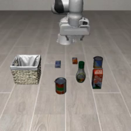
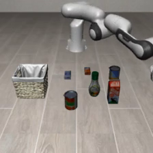
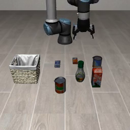
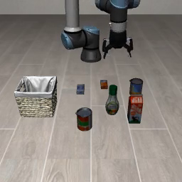
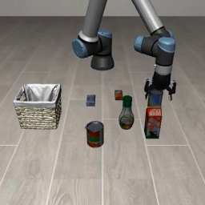

A は Franka、B は UR5e、0 はスープ。やるべきタスクはスープをカゴに入れること。50 配置・seed 7・300 ステップ。2026-11-09。
| 条件 | やったこと | 手 | 開始 | A0 → B0 |
|---|---|---|---|---|
| さらに前 | Franka の学習統計をそのまま掛ける | Robotiq | UR のまま | 0/50 |
| 正規化だけ | 位置・姿勢・閉じ具合を共通の物理レンジへ | Robotiq | UR のまま | 実質 0/50 |
| 腕なし画像 | 学習・推論の RGB から腕を灰色に塗る | Robotiq | UR のまま | 0/50 |
| UR に Franka の手 | Panda グリッパ＋手先開始を合わせる | Panda | 合わせる | 13/50 |
| 開始だけ | 手は替えず、手先開始だけ Franka に合わせる | Robotiq | 合わせる | 18/50 |
効いたのは手の付け替えではなく開始位置。改造なしで 18/50。公式判定 17/50、カゴ 18/50、持ち上げ 25/50。重みはどれも Franka スープ（A0）。A0→A0 は正規化だけ 34/50、腕なし 32/50。
UR のスープ重みを Franka で評価した。開始は A0→B0 と同じく、その配置の Franka 手先へ OSC 25 ステップ。ずれ 0.2 mm。正規化は評価先 Franka の式。50 配置すべて失敗。缶に近づく・つかむ・持ち上げは 0。
| 条件 | 内容 |
|---|---|
| 腕・手 | Franka のまま |
| 開始位置 | その配置の Franka 手先。ずれ 0.2 mm |
| グリッパの数字 | Franka の閉じ具合の式 |
| 重み | UR5e スープ（B0） |
| 判定 | 0/50（近づきも 0） |
公式評価から 4 本。どれもスープに触れない。


前回は UR ホバー 1 点へ寄せていた（ずれ 6.4 mm、近づき 2/50、成功 0/50）。今は A0→B0 と同じ Franka 配置ごと。
| 内容 | |
|---|---|
| 腕 | UR5e のまま（青いアーム） |
| 手 | Robotiq のまま。実機と同じで改造しない |
| 開始位置 | Franka の手先へ OSC で寄せる。ずれ 15 cm → 1.2 cm |
| グリッパの数字 | UR5e（Robotiq）の閉じ具合の式 |
公式評価から 4 本。やるべきタスクは UR5e でスープをカゴへ。重みは Franka スープ。



手を付け替えた評価は 13/50。開始合わせより低い。
腕を灰色に塗った評価。開始を合わせないと A0→B0 は 0/50 のまま。
| 表し方 | −1 | +1 | |
|---|---|---|---|
| 位置 xyz | メートルのまま | −0.31, −0.345, 0 | 0.26, 0.375, 0.45 |
| 姿勢 | 真下（x 軸 π）からのずれ | −0.5 rad | 0.5 rad |
| グリッパ | 閉じ具合 0〜1 を 2 回。Franka は 1−幅/0.08、UR5e は関節/0.8 | 全開 | 全閉 |
| 行動 7D | OSC。1 で 5 cm。グリッパ −1 開 / +1 閉 | −1 | 1 |
位置の範囲は LIBERO-Object 全 10 タスク×50 配置の物体・カゴ中心に 10 cm 余白。リークなし。ガウシアンノイズなし。開始だけ合わせた評価では UR5e の式。手を付け替えた評価では Franka の式。